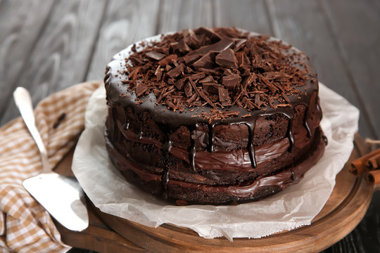

Preparation Time: 50 minutes
Difficulty Level: Medium
Chocolate Cake is a soft, moist, and rich dessert loved by people of all ages. It is perfect for celebrations, birthdays, and special occasions.
This cake has a deep chocolate flavor and a smooth texture that melts in your mouth.
Do not open the oven frequently while baking. You can add chocolate syrup for extra taste.